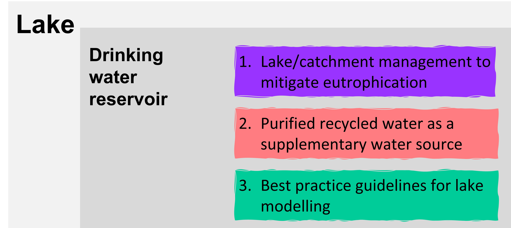

1. River

My river research is focused on non-perennial streams, streams that flow for some time of a year. Non-perennial streams are less studied and understood
compared to perennial streams, but have attracted increasing research interests over the past decades.
1) One of my research direction is to find out where non-perennial streams are i.e. the spatio-temporal dynamics of flow intermittency across river networks.
You can find more detail from two of my publications:
2) On non-perennial streams, I am also exploring plausible methods to identify variations in surface water extent when stream flow ceases.
When stream flow ceases, non-perennial streams are usually disconnected into a series of isolated pools.
The surface water in these pools are critical refuges for aquatic species to survive extended dry periods.
You can find more detail about my research on this area from the below publication:
3) The two above mentioned research questions enable us to have reasonable estimates of where non-perennial streams are and how persistent surface water is across river networks.
Building on that, I am able to propose a conservation planning strategy for biodiversity management across non-perennial river networks.
This strategy essentially prioritises river segments with persistent surface water and other required attributes for aquatic species to survive and flourish in an non-perennial stream environment.
A paper describing this research is currently under review (see below) and will be made available once accepted for publication.
But if you feel interested in this research, you are welcome to reach out to me via email.
- Prioritising aquatic refuges to sustain freshwater biodiversity of intermittent streams in eastern Australia
2. Lake

My lake research is focused on drinking water reservoirs, with extensive collaborations with the water utility industry.
Drinking water reservoirs provide invaluable water resource to human society but are strongly influenced by human activities
that occurr in the catchment and the lake. My lake research looks to understand how various aspects of the lake (e.g., water
volume, nutrients, phytoplankton, and microorganism) are affected.
1) increased nutrient loads from the catchment and sediment release from the lake bottom can lead to eutrophication and algal bloom,
posing significant risks to drinking water security. Part of my lake reserch tries understand the whole lake system through aquatic
ecosystem modelling and propose potential management options to mitigate eutrophication issues.
Several project reports have been generated from this research (see below), and can be made available on reasonable request.
- Impact of projected climate change on inflows to Grid10 water storages in south-east Queensland
- Trialling potential options to restore water quality in Lake Hugh Muntz
2) Purified recycled water (PRW) can be a climate resilient water source and has been introduced for direct/indirect potable reuse around the world.
I have been working with Seqwater and my Griffith colleagues to assess algal bloom and microbial risks from PRW addition in a large drinking water reservoir.
More detail about this research can be found from below project reports, which can be available on reasonable request.
- Assessing algal bloom risk from PRW inputs in Lake Wivenhoe. Part 2: Modelling study
- Purified Recycled Water and Lake Wivenhoe Modelling of pathogen fate and transport
3) Lake model, i.e. aquatic ecosystem model, is an important tool for researchers and water utilities to understand drinking water reservoirs,
and the quality of model outputs heavily relies on several key modelling steps, but different modellers may take different steps in
applying the models. We thus need a set of best practice guidelines for lake modelling to guide the model application and provide confidence in
the quality of model outputs.
I am currently leading a research project to address this objective, with the below publication so far: